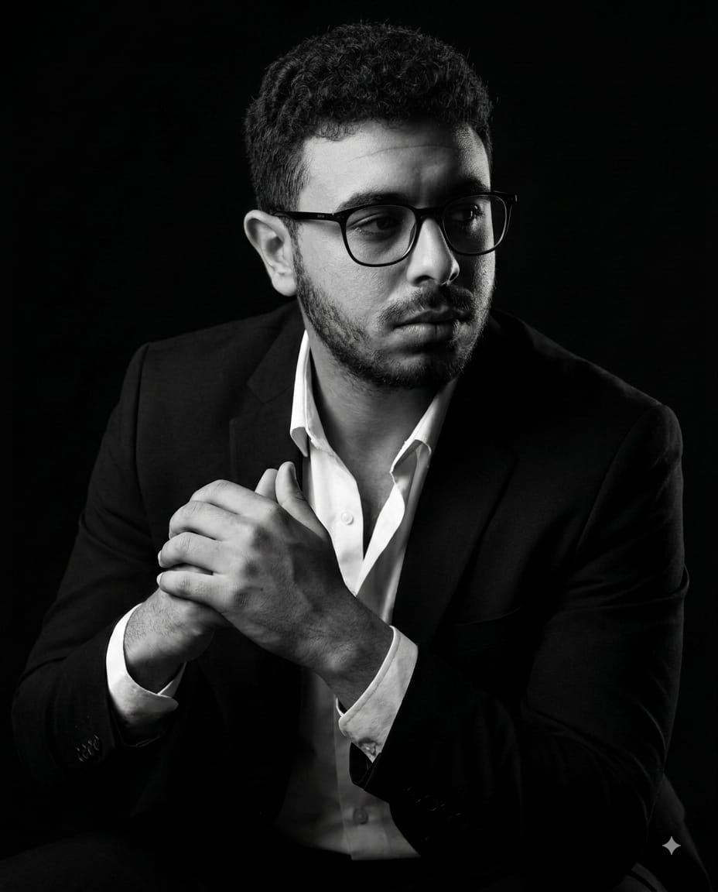

BIENVENUE DANS
MON PORTFOLIO
PORTFOLIO PERSONNEL / FULL STACK
BONJOUR, JE SUIS
BADER
AL MUDHAHKI
Étudiant développeur · Développement Digital Full Stack
Étudiant en deuxième année à l’OFPPT, je transforme mes idées en sites web et applications concrètes.
DÉCOUVRIR MES PROJETS
APPRENDRE PAR LA PRATIQUE
Du raisonnement
au code.
BADER AL MUDHAHKI · CASABLANCA
Je suis en deuxième année de Développement Digital, option Full Stack, à l’OFPPT.
Après un baccalauréat en Sciences Physiques obtenu en 2024, j’ai choisi de poursuivre mon parcours dans le développement logiciel. Les travaux pratiques me permettent d’apprendre en construisant des interfaces, des applications et des outils de gestion.
Mon objectif est de continuer mes études en Licence Informatique et d’approfondir le développement logiciel et les systèmes informatiques.
Ce que je peux construire.
Des compétences travaillées en formation et mises en pratique dans mes projets.
01Sites web responsivesHTML · CSS · JAVASCRIPT
Des pages structurées, adaptées aux écrans mobiles, avec une navigation claire et des interactions utiles.
HTML / CSS · Bootstrap · JavaScript02Interfaces interactivesREACT · VITE
Des composants réutilisables pour formulaires, tableaux de bord et outils de gestion.
React · JavaScript · Vite · Axios03Applications & donnéesPHP · SQL · MYSQL
Des applications de formation connectées à des bases de données et des fonctionnalités CRUD.
PHP · Laravel · MySQL · SQL04Modélisation & logiqueUML · MERISE · PYTHON
Comprendre un besoin, organiser les données et avancer vers une solution étape par étape.
UML · Merise · Python · AlgorithmiqueDu travail concret.
Travaux réalisés pendant ma formation à l’OFPPT. Les aperçus ouvrent les sites réels quand ils sont disponibles.
Projets réalisés
13 ENTRÉES · OFPPTEn cours
EN DÉVELOPPEMENTLes outils de mon parcours.
Logos des technologies que j’ai utilisées dans les travaux et projets présentés ici.
Code sprint.
Cinq questions tirées au hasard, avec des exemples renouvelés à chaque partie. Tu as 30 secondes pour marquer un maximum de points.
Prêt à tester tes réflexes de développeur ?
Chaque partie compose une nouvelle série de questions.